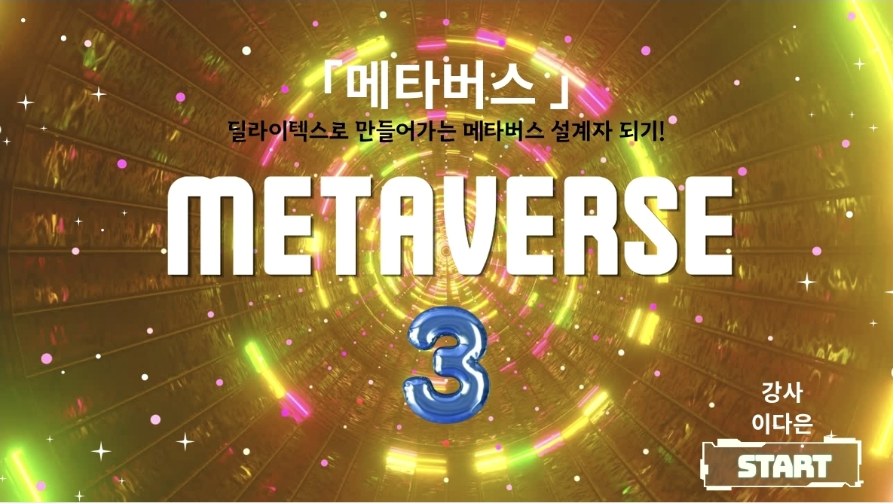
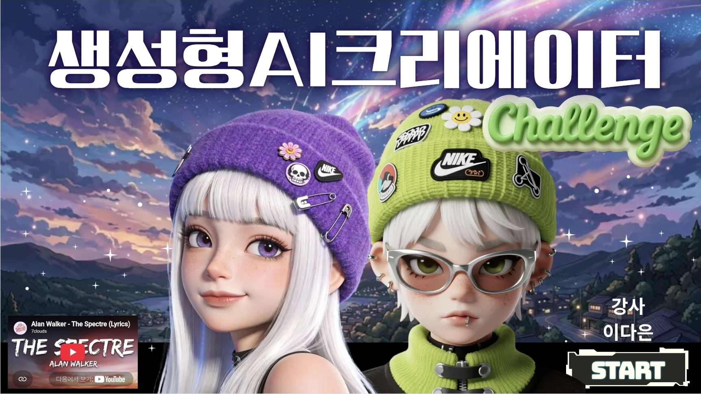
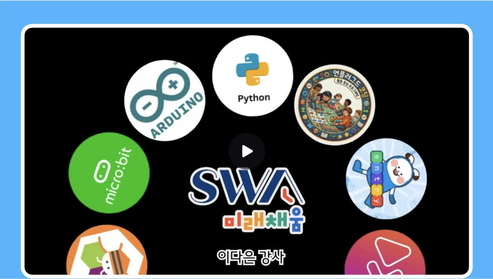

학교 수업
AI로 나만의 이야기 만들기
질문을 구체화하고 글과 이미지를 연결하며 각자의 아이디어를 작품으로 발전시키는 활동입니다.
출강 현장의 사진과 학습자 활동 후기를 차곡차곡 기록합니다.

질문을 구체화하고 글과 이미지를 연결하며 각자의 아이디어를 작품으로 발전시키는 활동입니다.

생성형 AI로 이미지와 캐릭터를 기획하고 영상 콘텐츠로 완성하며 창의적인 아이디어를 표현합니다.

언플러그드 활동부터 블록 코딩, 피지컬 컴퓨팅과 파이썬까지 다양한 도구로 컴퓨팅 사고력과 문제 해결력을 기릅니다.
“어려운 AI 용어를 직접 만들어 보는 활동으로 이해할 수 있었어요.”수업 후기 예시
“천천히 따라 할 수 있어서 다음에도 다시 참여하고 싶습니다.”수업 후기 예시